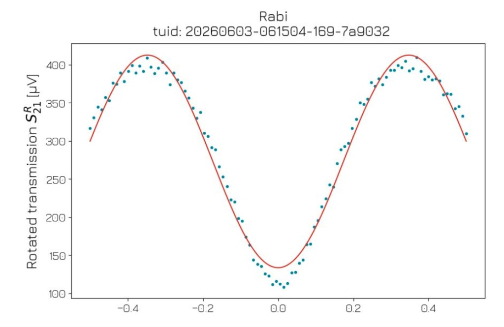

Amplitude Rabi
Find the pulse amplitude that drives |0⟩ → |1⟩ — and see why that amplitude must be measured on hardware, not calculated from theory alone.
Instructions
- Read what must already be calibrated, how an amplitude Rabi sequence works, and why pulse amplitude still has to be measured.
- Sweep pulse amplitude while watching the status banner — hunt for the amplitude that generates the π-pulse.
- When that amplitude is found, compare the ideal curve with the real Qblox lab data.
- After finding the π-pulse, check what comes next in the calibration sequence.
Keyboard: Tab reaches the slider, Bloch sphere, and Reset; arrow keys adjust amplitude or rotate the Bloch view when focused; Home/End jump to min/max amplitude; Enter or Space activates Reset; Esc resets the widget.
Required setup — already calibrated
These parameters must already be calibrated from earlier experiments. Without them, an amplitude Rabi cannot run successfully:
- Resonator frequency from resonator spectroscopy
- Readout power from resonator punch-out
- Qubit transition frequency ω01 from qubit spectroscopy
With those fixed, this experiment holds pulse duration and drive frequency constant and hunts for the amplitude that generates the π-pulse.
The experiment — Amplitude Rabi sequence
- Choose one pulse amplitude Ai.
- Run the pulse sequence once: initialize |0⟩, drive at ω01 using pulse amplitude Ai, then read out and classify the result as |0⟩ or |1⟩.
- Repeat at the same pulse amplitude Ai many times to estimate P(|1⟩) for that pulse amplitude.
- Move to the next pulse amplitude and repeat, building the plot of P(|1⟩) versus pulse amplitude.
A related experiment is a time Rabi (or length Rabi): hold amplitude fixed and sweep pulse duration instead. Here we keep duration fixed and sweep amplitude.
Why measure — you cannot just solve for amplitude
On resonance, after a drive pulse of duration t and pulse amplitude A,
P(|1⟩) = sin²(ΩR·t / 2), with ΩR ≈ (scale factor)·A
ΩR is the Rabi frequency: the rate at which the drive rotates the qubit on the Bloch sphere (radians per second). It is not the microwave tone frequency ω01 — that stays fixed on resonance. A larger pulse amplitude makes the state rotate faster, so ΩR grows with A. With t held fixed, sweeping A is how you change how far the state rotates, and therefore P(|1⟩). A π-pulse is the first A where P(|1⟩) reaches 1.
That rotation angle is θ = ΩR·t, so P(|1⟩) = sin²(θ/2) is just the population view of the same motion.
That scale factor depends on the control chain — attenuators, cables, mixers, pulse shaping, and the qubit’s coupling to the drive line — so it cannot be predicted reliably from first principles and drifts with the setup. Theory predicts the curve’s shape; the experiment finds which pulse amplitude A actually gives the first π-pulse on your hardware.
Controls
Primary visualization
Bloch sphere
On resonance, P(|1⟩) = sin²(ΩR·t / 2) with θ = ΩR·t on the Bloch sphere, and ΩR grows with pulse amplitude A: ΩR ≈ (scale factor)·A. Off resonance, the envelope is modified by a detuning factor and the oscillation frequency becomes √(ΩR² + Δ²). What you cannot calculate ahead of time is which pulse amplitude produces the ΩR you need — Amplitude Rabi measures that on the device. Drive phase sets the rotation axis: this visualization uses a Y-rotation (the state moves in the YZ plane); a resonant X-drive would rotate in the XZ plane instead.
Ideal two-level model
Results
Looking for the amplitude that generates the π-pulse (full flip |0⟩ → |1⟩).
Live readout
- Amplitude A = 0.00
- P(|1⟩) = 0.00
- θ = ΩR·t = 0.00 rad (0.00 π)
Real lab data — compare

Real Qblox amplitude Rabi: teal scatter + red fit. Vertical axis is rotated transmission S21R in µV — not bare P(|1⟩).
Compare to real lab data
The ideal curve plots P(|1⟩) from 0 to 1. The lab plot shows S21R in µV, with a trough near amplitude 0 and peaks near ±0.35. How does the measured voltage reveal P(|1⟩), and why do the real points scatter around the fitted curve?
Reveal explanation
Both plots show P(|1⟩) rising and falling as pulse amplitude increases. The lab curve reports that through a measured voltage, not a bare probability.
- What the lab actually records: each readout returns a voltage S21R (here in µV) that depends on whether the qubit is in |0⟩ or |1⟩. As P(|1⟩) rises and falls with pulse amplitude, that voltage rises and falls with it — so the lab curve has the same oscillation shape as the ideal P(|1⟩) plot, even though the vertical axis is not probability.
- Offset and scale: the electronics set a vertical offset and gain, which stretch or shift the curve up and down. They do not move where the peaks and troughs sit on the amplitude axis — so the π-pulse landmark is still readable from the shape.
- Scatter: real points do not sit exactly on the fit. Shot noise, probabilistic measurement outcomes, and setup noise all add scatter around the underlying oscillation.
- Ideal model vs hardware: on the ideal curve, each peak reaches all the way to 1 and each trough all the way to 0. On hardware, that full swing often fades as pulse amplitude increases — peaks come in lower, troughs higher. That fading swing is loss of contrast. The wave can also lean or flatten instead of staying a clean sin² shape; that shape change is distortion. That is one reason calibration reads the π-pulse from the first peak, where the data usually still match the ideal model best.
- In this Qblox plot: a trough near A ≈ 0 is |0⟩ (P(|1⟩) ≈ 0). The first peaks near ±0.35 are where P(|1⟩) ≈ 1 — the π-pulse.
- Why ± amplitudes: positive and negative amplitude reverse the drive phase but produce the same |θ|, so the oscillation is roughly symmetric about zero.